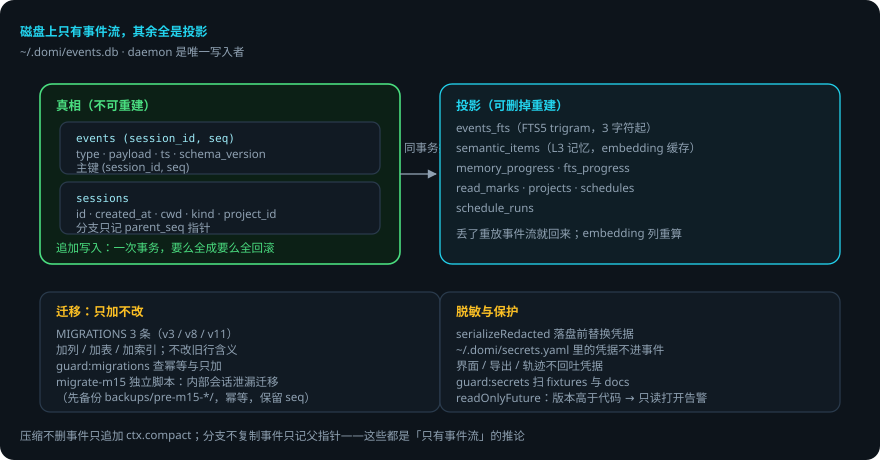
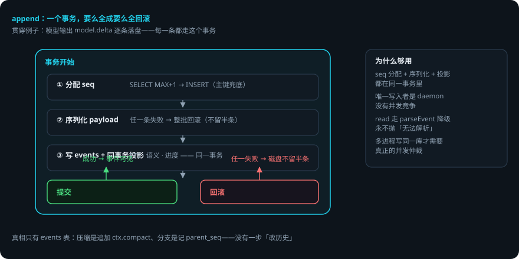

会话存储与事件流
本页回答四个问题：事件存在哪？一次写入怎么保证原子？哪些表能删掉重建？迁移怎么做到只加不改？
packages/store—— SQLite 事件流（bun:sqlite），daemon 是唯一写入者。 贯穿例子：给登录接口加限流——你 30 秒前发的那条消息、domi 改过的每个文件版本，都在这条流里。
先说结论
- 磁盘上只有事件流，其余全是投影。真相是
events表。 - 写入是一个事务：seq 分配、序列化、投影表更新要么全成，要么全回滚。
- 投影表（FTS、语义、进度、已读、项目、日程）可以删掉重建，丢了不伤真相。
- 迁移只加不改：加列 / 加表 / 加索引。旧行的含义永远不变。
- 磁盘版本高于代码版本时，只读打开并告警，不拒绝启动。
- 事件落盘前按
~/.domi/secrets.yaml脱敏，界面 / 导出 / 轨迹都不回吐凭据。
用到的词
| 词 | 意思 |
|---|---|
| 事件流 | 只追加的事件序列。会话的全部真相。 |
| 投影 | 从事件流算出来的表或视图（搜索、语义记忆、进度）。 |
| 事务 | 一批操作要么全成、要么全不成的边界。 |
| 迁移 | 旧库升到新 schema 的脚本。 |
| 脱敏 | 落盘前把凭据替换掉。 |
1. 总体流程


2. 文件与打开
- 生产路径：
~/.domi/events.db。:memory:仅供不需要跨进程持久化的用例。 - 首次运行，父目录由 store 自己建——「第一次跑就崩」是最劝退的失败方式（SQLite 只会给一句
SQLITE_CANTOPEN）。 - PRAGMAS 与 DDL 无条件跑（
IF NOT EXISTS幂等）。 - 磁盘版本高于代码版本：置位
readOnlyFuture，只读打开并告警，不拒绝启动（INV-01 的兑现）。
3. 事件表与 seq
CREATE TABLE events (
session_id TEXT, seq INTEGER, parent_seq INTEGER, ts INTEGER,
schema_version INTEGER, type TEXT, payload TEXT
) -- 主键 (session_id, seq)
三个不显然的地方（sqlite-event-log.ts 文件头，改之前先读）：
- seq 在同一事务内分配（
SELECT MAX+1 → INSERT），靠主键兜底。够用是因为只有一个写入者；哪天多进程同时写同一个库才需要换成真正的并发仲裁。 - 序列化放在事务内部——一批事件里任意一条序列化失败，整批回滚，磁盘上不会留半条。
- read 走
parseEvent的降级路径，永不抛「无法解析」（INV-01）。
会话元数据在 sessions 表（id / created_at / cwd，STRICT 表）。分支记 parent_seq 指针，不复制事件。
4. 投影表：可以删掉重建
真相只有 events 表。以下全部在 append 的同一个事务里投影：
| 表 / 索引 | 是什么 | 丢了怎么办 |
|---|---|---|
events_fts（FTS5） |
全文检索 | 重放重建 |
semantic_items |
L3 语义记忆 | 重放重建 |
memory_progress / fts_progress |
各投影到第几条 | 重建 |
read_marks |
已读标记 | 重建 |
projects |
项目 | 重建 |
schedules / schedule_runs |
定时任务 | 重建 |
两个实现细节：
- FTS 用 trigram 分词器。默认的 unicode61 不切中文，「数据库迁移」整条会被当成一个词。代价：查询串至少要三个字符，两个字的中文词匹配不到——那条路径由调用方降级成 LIKE 扫描。
- embedding 是唯一不来自事件的列。
semantic_items里的向量是算出来的缓存，丢了重算。
5. 迁移：只加不改
migrate.ts + schema.ts 的 MIGRATIONS（现有 3 条：v3、v8、v11——会话列、子 agent、项目/日程）。规则：
- 迁移只能加列 / 加表 / 加索引，不能改旧行的含义。
guard:migrations检查迁移是否幂等、是否只做加法。domi migrate命令封装（cli的migrateDatabase）。
M15 有一条独立迁移（domi migrate-m15，packages/store/src/migrate-m15.ts）：M4 之前的版本允许 _ 前缀会话（内部会话）被当作普通会话使用，用户事件可能落进 _memory。这个脚本把这些泄漏的用户事件迁出成普通会话，内部会话只留记忆事件。三个硬性要求：
- 迁移前自动把
events.db复制到backups/pre-m15-migration-<ts>/，失败可回滚。 - 幂等可重跑：
migrated-<原id>会话已存在就跳过。 - 保留原 seq 映射：
UPDATE session_id后原 seq 原样保留，ctx.ref引用照常解析。
它不删任何事件——只是把一批事件从旧会话划到新会话名下（INV-01）。
6. 隐私与脱敏
redact.ts：serializeRedacted——事件落盘前按 ~/.domi/secrets.yaml 里的凭据做脱敏。界面 / 导出 / 轨迹任何接口都不回吐凭据（HANDOFF 硬规矩 2：凭据不进仓库、不回吐给界面）。guard:secrets 扫 fixtures 与 docs。
7. 搜索
store/search.ts：INDEXED_TYPES 决定哪些事件类型进 FTS（user.note 也在列）。查询串 < 3 字符走 LIKE 降级。
8. 出错了怎么办：限流第 2 步写到一半，进程崩溃
- 一批事件写一半崩了。事务回滚，磁盘上不留半条。重启后从最后一条完整事件继续。
- 磁盘版本高于代码版本（你用旧版 domi 打开了新版建的库）。只读打开并告警——绝不写，绝不错乱。升级 domi 即可。
- 迁移失败。
migrate-m15会把events.db先备份到backups/pre-m15-migration-<ts>/；失败可回滚。普通迁移是纯加列，失败也不伤旧行。 - 投影表坏了 / 被删了。重放事件流重建，真相还在。
- 凭据泄漏风险。
serializeRedacted在落盘前处理；guard:secrets在 CI 扫 fixtures 与 docs。
一张表看全部情况
| 情况 | domi 做什么 | 你要做什么 |
|---|---|---|
| 写入中断 | 事务回滚，不留半条 | 不用管 |
| 库版本比代码新 | 只读打开并告警 | 升级 domi |
| 迁移失败 | m15 先备份可回滚；加列迁移不伤旧行 | 看告警，必要时手动回滚 |
| 投影表坏 | 重放重建 | 不用管 |
| 换了凭据 | 旧库里的脱敏数据不受影响 | 更新 secrets.yaml |
9. 为什么只有事件流
- 压缩：
ctx.compact只是又一条事件（INV-12，「压缩后可重放等价」免费得到）。 - 分支 / 回放：从某 seq 重放即 fork / time-travel。
- 状态栏 / 轨迹 / 记忆：全是投影，不用另做埋点（INV-13）。
- 整库可审计：权限决策、模型调用、工具执行都在事件里。
已知限制
- 单写入者假设：seq 分配靠主键兜底，多进程写同一库需要换成真正的并发仲裁。
- 单文件单点：没有多副本 / 集群。
- FTS trigram 最少三个字符，两字中文词匹配不到（有 LIKE 降级）。
semantic_items的 embedding 不是事件来源，重放重建要重新调用 embedding 服务。
代码在哪里
| 主题 | 位置 |
|---|---|
| 事件写入（事务 / seq / 投影） | packages/store/src/sqlite-event-log.ts |
| 迁移与 schema | packages/store/src/{migrate,schema}.ts |
| M15 内部会话泄漏迁移 | packages/store/src/migrate-m15.ts |
| 全文检索 / 语义投影 | packages/store/src/{search,semantic}.ts |
| 脱敏 | packages/store/src/redact.ts |
| 项目 / 日程 / 已读 | packages/store/src/{projects,schedules,read-marks}.ts |
测试：packages/store/test/（append 原子性、迁移、搜索、脱敏）。
相关
- 事件契约与版本规则：Domi Protocol：daemon 与客户端之间的契约。
- 记忆与 Soul 的投影关系：记忆分层与 Soul。
- 压缩怎么只追加不删事件：压缩与 prompt cache。